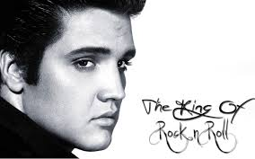
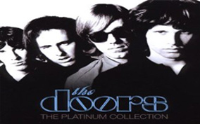

ELVIS PRESLEY
Elvis Aaron Presley (Tupelo, Misisipi, 8 de enero de 1935-Memphis, Tennessee, 16 de agosto de 1977) fue un cantante y actor estadounidense considerado de los más populares del siglo XX, considerado como un icono cultural y conocido ampliamente bajo su nombre de pila, Elvis. Se hace referencia a él frecuentemente como «el Rey del rock and roll» o simplemente «el Rey». Presley es considerado como una de las figuras más importantes de la cultura popular del siglo XX. Tenía una voz versátil y un inusual éxito en muchos géneros, entre ellos el country, el rock, las baladas, el góspel y el blues. Asimismo, se trata del solista con más ventas en la historia de la música popular.9 10 11 12 Nominado a 14 premios Grammy, ganó tres y recibió uno en la categoría a la carrera artística a la edad de 36 años, además de figurar en diversos salones de la fama musicales. En 2016, fue certificado por la RIAA como el tercer máximo vendedor de álbumes de todos los tiempos en Estados Unidos, solo por detrás de The Beatles y Garth Brooks.13



THE DOOR
Es considerado como uno de los mejores trabajos de la banda, además de uno de los mejores álbumes debut de cualquier grupo. En 1998 los lectores de la revista Q eligieron este álbum como el nº 93 de los mejores discos de todos los tiempos, en 2003 el canal de cable VH1 lo situó en el n.º 60 y figura como nº 42 en la lista de los 500 mejores álbumes según la revista Rolling Stone. The Doors no sólo fue uno de los discos más importantes para la evolución de rock psicodélico, es también una de las grabaciones más aclamados en toda la música popular. La canción "Break on Through (To the Other Side)" fue censurada, cambiando el original She Gets High por un simple She Gets. También fue censurada una parte del final de la canción "The End" en la que Jim Morrison repite Fuck, Fuck.... Ambas canciones volvieron a sus versiones originales sin censura en el álbum Legacy: the Absolute Best.
| Elvis Presley |
| El Rey |
| Nominado a 14 Premios Grammy |
| The Door |
| Mejor album de debut |
| Inicio |
| Artistas |
| Top-10 |
| Letras |
| Acordes |
| Redes Sociales |